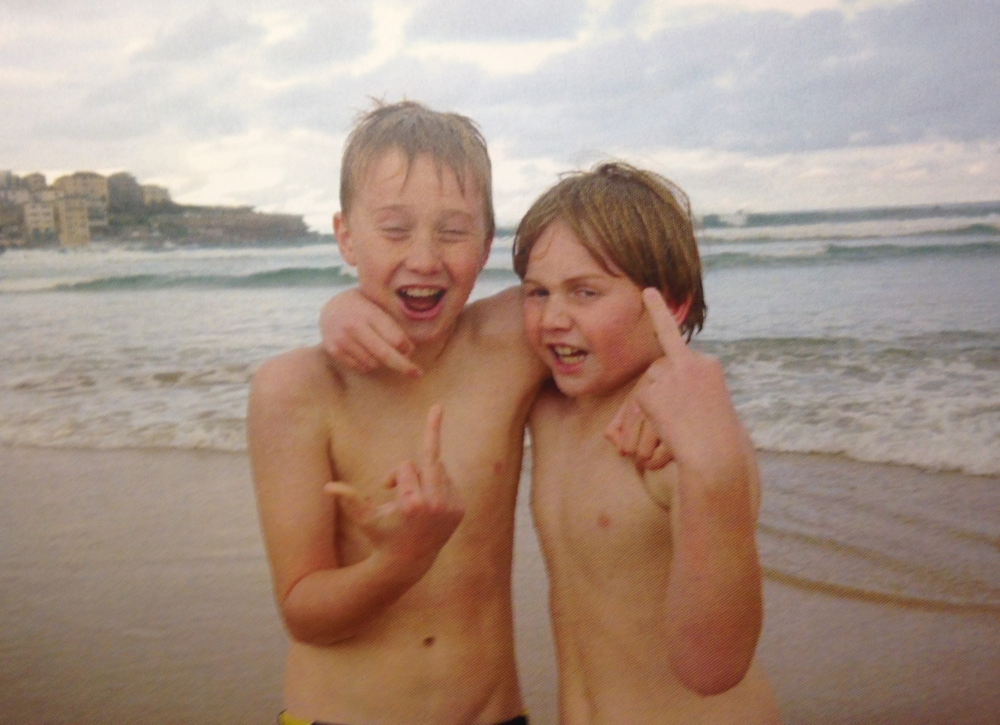

I never imagined ScribbleMouth would take off the way it has, yet here we are — and I get more excited each day by the community we’re building together. What drives me is the belief that curiosity should be nurtured, celebrated, and shared openly. I see this space as more than content; it’s a chance to help shape a world that values open-mindedness, collaboration, and the joy of learning. I grew up at Bondi Beach, lucky enough to have the ocean at my doorstep. To this day, the sea remains one of my greatest sources of inspiration, alongside the cosmos, music, and snooker. These influences, vast and varied, fuel the way I think, create, and share ideas.
